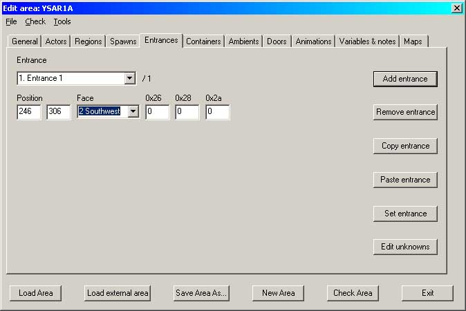
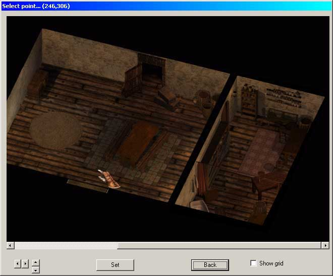
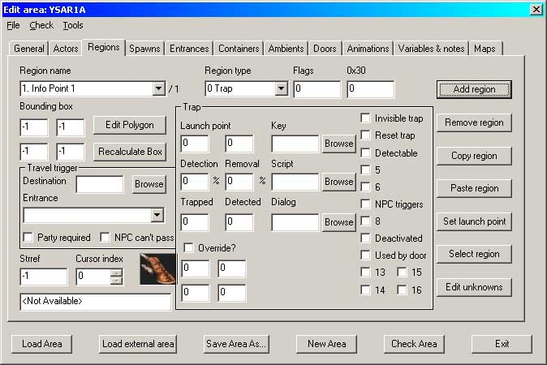
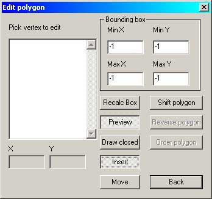
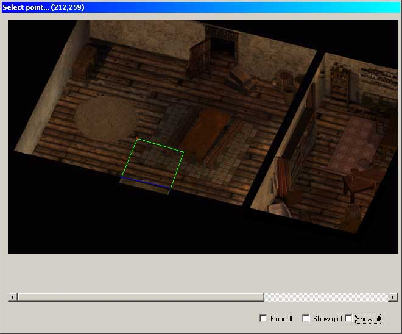
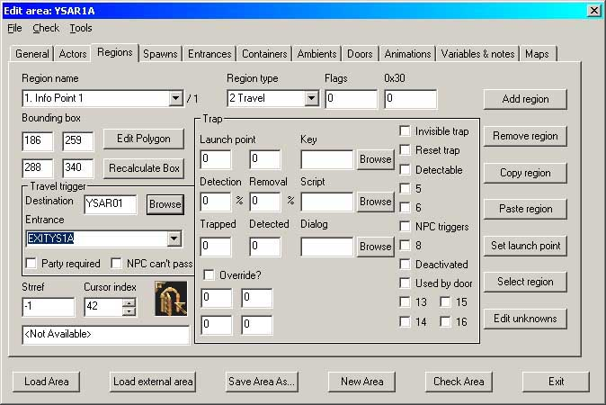
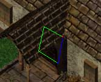
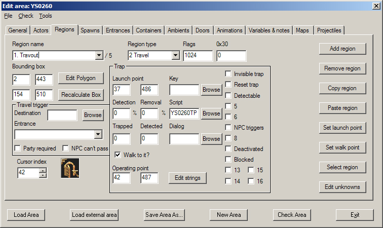

| Version History |
| Introduction |
| Adding Entrances |
| Adding the Travel Regions |
| Scripting Travel Regions |
Version History
1.0 Initial release 1.1 'Adding Entrances' naming added All references to Near Infinity deleted because it is no longer needed. 1.2 'Scripting Travel Regions' added
Introduction
Adding Entrances Adding the Travel Regions Scripting Travel Regions
This tutorial will teach you how to create travel regions to travel between map areas. It will not show you how to create doors that are associated with travel regions; that is the subject of a separate tutorial. See 'Adding Doors with DLTCEP'.
You will need two areas to start with, either or both of which can be an existing area.
I have no idea where you will be creating your mod, so I am going to assume that all of the relevant files are in your \bg2\override directory.
Unless you've changed your browser fonts to something weird and wonderful, the conventions in this tutorial are that Times New Roman is ‘descriptive’ text and Arial Bold is ‘action’ text. Alternatively, black is descriptive and blue is action.
| Adding the Travel Regions |
| Scripting Travel Regions |
Both areas need at least one entrance that can be referenced by the travel regions. If you try to access an area that has not had an entrance referenced, then BG2 will crash as a big black box onscreen. It's an easy fix..... For this tutorial I am going to work on a house in the seatown of my un-named mod currently in development and so I am going to assume that you too are working with two new areas. I will start with the exit from the inside of the house as this is the simplest possible area; it requires only an entrance and a travel region. The outside of the house will require an operating door as well as the travel region.
Start DLTCEP if you haven’t already done so.
As this is an already-started area, the name of the associated .wed file should automatically appear in the wedfile box.
The screen should be completely greyed-out if this is the first entrance.
The screen should go active with 'Entrance 1' listed.
Don't bother with a number as DLTCEP will allocate that automatically.
|
 Image 1 – the Entrances tab |
Select the angle that you require for the party to appear - in this case the party is travelling from north-east to south-west as they exit the door. We now need to set the area that the entrance takes effect in, so:-
|
 Image 2 – Set Entrance |
A preview of the area will come up, allowing you to select exactly where the entrance will be. Click somewhere reasonably close to the door and then
The left and top (x and y) co-ordinates of the travel region as displayed in the window title bar are then automatically copied to the Entrances page - see the 'Position' fields in Image 1.
What you are doing here is setting the point at which the character/party will appear when they enter through the door and the new area loads, so don't crowd the door too closely.
Finally,
to return to the main Entrances screen. Save the area..
Now, this is where we meet a small catch..... we can't add the travel region until we have an entrance to go to, so you need to repeat the placing of an entrance onto your second area.
Right...... so create the corresponding entrance on the other area, repeating everything in order from the top! There is no reason why you cannot re-use the same entrance name if you wish, because you are now working with a different .are file. In this case I did re-use the same name so that I could tell immediately where the travel from the main map would take me. As a simple move indoors, it's no great deal but it's something that could make your life easier if you are travelling between map areas.
At this point you have two entrances and no way of moving between them - yet. We need to return to the inside of the house.
| Adding Entrances |
| Scripting Travel Regions |
This is what you should get.
|
 Image 3 – The Regions tab |
Don't let the multitude of options worry you - for adding travel regions we are really only concerned with the top row of boxes and the leftside one-third of the screen.
If you look down at the Cursor Index, you will see that it has automatically changed to Index 42 - the open door. If this was to be a travel between map areas then you would need to change this to the cartwheel. At the same time the Edit Polygon screen has appeared.
|
 Image 4 – The Edit Polygon screen |
As soon as you select Preview then your area will again appear in a separate screen. Carefully add the region polygon as any shape you like.
|
 Image 5 – Travel region polygon |
If you are not happy with the size or shape of the polygon, go back the Edit Polygon screen and
The Polygon Editor is now in Modify mode. Click on anyone of the listed vertices and you will see it light up in the Preview screen as a red dot. When you've identified the one that you are not happy with, click on the screen at the place you would like that vertex to be and DLTCEP will move it for you. When you are satisfied,
to return to the Regions tab. We now need to select the area that we are travelling to.
Select your second area from the listbox with a doubleclick. The area name will be transferred to the textbox and at the same time, DLTCEP will populate the Entrance listbox with all of the available entrances in the area. Check the screenshot below - I am moving from area YSAR1A (shown in the title bar) to entrance EXITYS1A in area YSAR01. There will only be one entrance available in your new second area, so select it. The first Travel Region is now basically complete. There are two more options available: 'Party Required' and 'NPC Can't Pass' - select as required. Don't forget to give the region a scriptable name as with Entrances above.
|
 Image 6 – The completed Travel region |
Save it. If you now load BG2 and CLUAConsole into this area, you should be able to leave it by your newly-created travel region but you won't yet be able to return. To get two-way travel, you need to repeat the whole of this section on your second area. If you are creating a travel area for a one-way door, then you must ensure that the travel region polygon is smaller than the outline you will use to indicate the usable door - see also 'Adding Doors with DLTCEP'.
|
 Image 7 – The One-way Door Travel region |
If all has gone well, you can now travel between your two areas - but it looks pretty silly entering a door without opening it first...... :)). That problem is sorted in 'Adding Doors with DLTCEP'
| Adding Entrances |
| Adding the Travel Regions |
Travel regions can also have scripts. The most obvious area for this in the unmodded game is the entrance to the circus in Waukeen's Promenade where you go to two different areas depending on whether you have completed the circus quest. or not. This is done by creating a travel area as described above but by leaving out the Travel Trigger information (see Image 6) and adding the trap information as shown in Image 8 below. I refer you the topic 'Info Triggers' for the information on filling in the Trap section - just ensure that the final version looks like this.
|
 Image 8 – Adding the Travel Script |
Note that the 'Walk to it?' and the 'Launch point' co-ordinates are both inside the travel region itself. Without the 'Walk to it?' being set your party will just stand around doing nothing when you click on the travel region. With a standard travel region this information is automatically added to the finished .are file. The 'Walk to it?' information is created in exactly the same way as the 'Launch point' described in the 'Info Triggers' topic, except that you use the 'Set walk point' rather than the 'Set launch point' button.
Also note that the Image 8 screenshot is from a much later version of DLTCEP than the others, which is why this one has the 'Walk to it?' checkbox and the others do not show it.
The script listed here (ys0260tp) transports the party to either a deserted area or a fully populated area depending on where we are in the story.
The nice thing about the LUA command here is that if you don't have a full party of six, it won't object to moving just just those NPCs you do have with you - if any. Tutorial written by Yovaneth, apprentic’d at Candlekeep during the Bhaalspawn Troubles. Post it where you will but please don’t take credit for what you have not written.// Village deserted IF IsOverMe([ANYONE]) //Any character is in my proximity box Global("ys_VillageQuestComplete","GLOBAL",0) //Flag to control the area to move to THEN RESPONSE #100 ActionOverride(Player1,LeaveAreaLUA("ys1000","",[2730.2040],3)) //Move the party to the required area ActionOverride(Player2,LeaveAreaLUA("ys1000","",[2740.2050],3)) ActionOverride(Player3,LeaveAreaLUA("ys1000","",[2740.2050],3)) ActionOverride(Player4,LeaveAreaLUA("ys1000","",[2740.2050],3)) ActionOverride(Player5,LeaveAreaLUA("ys1000","",[2740.2050],3)) ActionOverride(Player6,LeaveAreaLUA("ys1000","",[2740.2050],3)) END // Village restored IF IsOverMe([ANYONE]) //Any character is in my proximity box Global("ys_VillageQuestComplete","GLOBAL",1) //Flag to control the area to move to THEN RESPONSE #100 ActionOverride(Player1,LeaveAreaLUA("ys1001","",[2730.2040],3)) //Move the party to the required area ActionOverride(Player2,LeaveAreaLUA("ys1001","",[2740.2050],3)) ActionOverride(Player3,LeaveAreaLUA("ys1001","",[2740.2050],3)) ActionOverride(Player4,LeaveAreaLUA("ys1001","",[2740.2050],3)) ActionOverride(Player5,LeaveAreaLUA("ys1001","",[2740.2050],3)) ActionOverride(Player6,LeaveAreaLUA("ys1001","",[2740.2050],3)) END